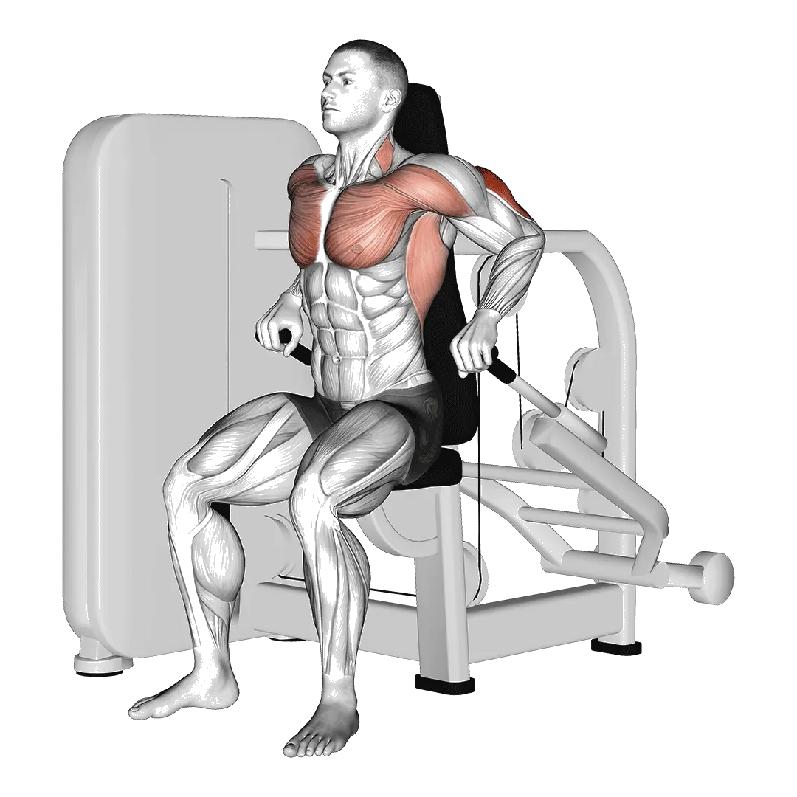

시티드 딥스 머신
시티드 딥스 머신의 평균 중량과 기준 중량을 팔 대표 운동 기준으로 확인할 수 있습니다. 주동근은 상완삼두근, 상완이두근입니다.
평균 중량
팔팔 운동이두삼두상완삼두근

자극되는 근육
| 그룹 | 근육 |
|---|---|
| 주동근 | 상완삼두근, 상완이두근 |
| 보조근 | 하부 대흉근, 삼각근 |
| 안정근 | 없음 |
| 그립 | 없음 |
시티드 딥스 머신 평균 중량 [1RM]
| 레벨 | ||
|---|---|---|
| 입문 | 36 kg (79 lbs) |
22 kg (48 lbs) |
| 초급 | 65 kg (144 lbs) |
36 kg (80 lbs) |
| 중급 | 105 kg (232 lbs) |
56 kg (123 lbs) |
| 상급 | 155 kg (341 lbs) |
80 kg (176 lbs) |
| 엘리트 | 211 kg (465 lbs) |
106 kg (234 lbs) |
참고: 이 기준은 평균적인 리프터의 1RM을 기준으로 한 추정치입니다. 체중, 나이 등 개인 요인에 따라 달라질 수 있습니다. 자세한 데이터는 아래 표에서 확인하세요.
시티드 딥스 머신 기준 중량(kg)
남성 체중별(kg) 데이터 [1RM]
| 체중 | 입문 | 초급 | 중급 | 상급 | 엘리트 |
|---|---|---|---|---|---|
| 50 | 20 | 42 | 73 | 112 | 158 |
| 55 | 23 | 46 | 79 | 120 | 168 |
| 60 | 27 | 51 | 85 | 128 | 177 |
| 65 | 30 | 56 | 91 | 135 | 185 |
| 70 | 33 | 60 | 97 | 142 | 193 |
| 75 | 36 | 64 | 102 | 148 | 200 |
| 80 | 39 | 68 | 107 | 154 | 208 |
| 85 | 42 | 72 | 112 | 160 | 214 |
| 90 | 45 | 76 | 117 | 166 | 221 |
| 95 | 48 | 80 | 121 | 171 | 227 |
| 100 | 51 | 83 | 126 | 177 | 233 |
| 105 | 54 | 87 | 130 | 182 | 239 |
| 110 | 57 | 90 | 134 | 187 | 245 |
| 115 | 59 | 94 | 138 | 191 | 250 |
| 120 | 62 | 97 | 142 | 196 | 255 |
| 125 | 64 | 100 | 146 | 200 | 260 |
| 130 | 67 | 103 | 149 | 205 | 265 |
| 135 | 69 | 106 | 153 | 209 | 270 |
| 140 | 71 | 109 | 157 | 213 | 275 |
남성 나이별 데이터 [1RM]
| 나이 | 입문 | 초급 | 중급 | 상급 | 엘리트 |
|---|---|---|---|---|---|
| 15 | 31 | 56 | 90 | 132 | 179 |
| 20 | 35 | 64 | 103 | 151 | 205 |
| 25 | 36 | 65 | 105 | 155 | 211 |
| 30 | 36 | 65 | 105 | 155 | 211 |
| 35 | 36 | 65 | 105 | 155 | 211 |
| 40 | 36 | 65 | 105 | 155 | 211 |
| 45 | 34 | 62 | 100 | 147 | 200 |
| 50 | 32 | 58 | 94 | 138 | 188 |
| 55 | 30 | 54 | 87 | 127 | 174 |
| 60 | 27 | 49 | 79 | 116 | 158 |
| 65 | 24 | 44 | 71 | 105 | 143 |
| 70 | 22 | 40 | 64 | 94 | 128 |
| 75 | 20 | 36 | 57 | 84 | 115 |
| 80 | 18 | 32 | 51 | 75 | 103 |
| 85 | 16 | 28 | 46 | 68 | 92 |
| 90 | 14 | 26 | 41 | 61 | 83 |
여성 체중별(kg) 데이터 [1RM]
| 체중 | 입문 | 초급 | 중급 | 상급 | 엘리트 |
|---|---|---|---|---|---|
| 40 | 16 | 28 | 45 | 66 | 90 |
| 45 | 17 | 30 | 47 | 69 | 93 |
| 50 | 18 | 32 | 50 | 71 | 96 |
| 55 | 19 | 33 | 52 | 74 | 99 |
| 60 | 21 | 35 | 53 | 76 | 101 |
| 65 | 22 | 36 | 55 | 78 | 104 |
| 70 | 23 | 37 | 57 | 80 | 106 |
| 75 | 24 | 39 | 58 | 82 | 108 |
| 80 | 25 | 40 | 60 | 83 | 110 |
| 85 | 25 | 41 | 61 | 85 | 112 |
| 90 | 26 | 42 | 62 | 87 | 113 |
| 95 | 27 | 43 | 63 | 88 | 115 |
| 100 | 28 | 44 | 65 | 89 | 117 |
| 105 | 29 | 45 | 66 | 91 | 118 |
| 110 | 29 | 46 | 67 | 92 | 120 |
| 115 | 30 | 47 | 68 | 93 | 121 |
| 120 | 31 | 48 | 69 | 94 | 122 |
여성 나이별 데이터 [1RM]
| 나이 | 입문 | 초급 | 중급 | 상급 | 엘리트 |
|---|---|---|---|---|---|
| 15 | 18 | 31 | 48 | 68 | 90 |
| 20 | 21 | 36 | 55 | 78 | 104 |
| 25 | 22 | 36 | 56 | 80 | 106 |
| 30 | 22 | 36 | 56 | 80 | 106 |
| 35 | 22 | 36 | 56 | 80 | 106 |
| 40 | 22 | 36 | 56 | 80 | 106 |
| 45 | 21 | 35 | 53 | 76 | 101 |
| 50 | 19 | 32 | 50 | 71 | 95 |
| 55 | 18 | 30 | 46 | 66 | 87 |
| 60 | 16 | 27 | 42 | 60 | 80 |
| 65 | 15 | 25 | 38 | 54 | 72 |
| 70 | 13 | 22 | 34 | 49 | 65 |
| 75 | 12 | 20 | 31 | 43 | 58 |
| 80 | 11 | 18 | 27 | 39 | 52 |
| 85 | 9 | 16 | 24 | 35 | 46 |
| 90 | 9 | 14 | 22 | 31 | 42 |
참고: 머신과 케이블의 표시 중량은 제조사마다 차이가 있습니다. 같은 조건의 기구에서 비교하는 기준으로 사용하세요.
기준표 보는 법
| 레벨 | 설명 | 분포 |
|---|---|---|
| 입문 | 올바른 자세를 익히고 1개월 이상 꾸준히 운동하는 단계입니다. | 하위 5% |
| 초급 | 6개월 이상 꾸준히 운동한 단계입니다. | 상위 80% |
| 중급 | 2년 이상 꾸준히 운동한 단계입니다. | 상위 50% |
| 상급 | 5년 이상 꾸준히 운동한 단계입니다. | 상위 20% |
| 엘리트 | 해당 운동을 5년 이상 전문적으로 훈련한 단계입니다. | 상위 5% |
다른 운동
전신

데드리프트
전신 / BIG3

벤치프레스
전신 / BIG3

스쿼트
전신 / BIG3

헥스바 데드리프트
전신

파워 클린
전신

루마니안 데드리프트
전신

스모 데드리프트
전신

클린 앤 저크
전신

스내치
전신

클린
전신

클린 앤 프레스
전신

랙 풀
전신

덤벨 Romanian 데드리프트
전신 / 덤벨

행 클린
전신

스티프레그 데드리프트
전신

머슬업
전신 / 맨몸

파워 스내치
전신

쓰러스터
전신

푸시 저크
전신

덤벨 데드리프트
전신 / 덤벨

데피싯 데드리프트
전신

싱글레그 Romanian 데드리프트
전신

버피
전신 / 맨몸

행 파워 클린
전신

스플릿 저크
전신

덤벨 Snatch
전신 / 덤벨

클린 하이 풀
전신

스내치 데드리프트
전신

클린 풀
전신

포즈 데드리프트
전신

싱글레그 데드리프트
전신

머슬 스내치
전신

제퍼슨 데드리프트
전신

스내치 풀
전신

월볼
전신

저처 데드리프트
전신

싱글레그 덤벨 데드리프트
전신 / 덤벨

덤벨 Clean And 프레스
전신 / 덤벨

링 머슬업
전신 / 맨몸

덤벨 Thruster
전신 / 덤벨

행 스내치
전신

덤벨 하이 풀
전신 / 덤벨

덤벨 Hang Clean
전신 / 덤벨

비하인드 백 데드리프트
전신

클랩 풀업
전신

스쿼트 쓰러스트
전신
가슴
벤치프레스
가슴 / BIG3

덤벨 벤치프레스
가슴 / 덤벨

푸시업
가슴 / 맨몸

인클라인 벤치프레스
가슴

인클라인 덤벨 벤치프레스
가슴 / 덤벨

클로즈그립 벤치프레스
가슴

머신 Chest 플라이
가슴 / 머신

덤벨 플라이
가슴 / 덤벨

디클라인 덤벨 플라이
가슴 / 덤벨

디클라인 벤치프레스
가슴

스미스머신 벤치프레스
가슴 / 머신

케이블 플라이
가슴 / 케이블

체스트 프레스
가슴

플로어 프레스
가슴

인클라인 덤벨 플라이
가슴 / 덤벨

덤벨 플로어 프레스
가슴 / 덤벨

디클라인 덤벨 벤치프레스
가슴 / 덤벨

포즈 벤치프레스
가슴

원암 푸시업
가슴 / 맨몸

리버스 그립 벤치프레스
가슴

다이아몬드 푸시업
가슴 / 맨몸

클로즈그립 덤벨 벤치프레스
가슴 / 덤벨

벤치 핀 프레스
가슴

와이드그립 벤치프레스
가슴

디클라인 푸시업
가슴 / 맨몸

클로즈그립 인클라인 벤치프레스
가슴

인클라인 푸시업
가슴 / 맨몸

클로즈그립 푸시업
가슴 / 맨몸

아처 푸시업
가슴 / 맨몸

스포토 프레스
가슴
등
데드리프트
등 / BIG3

풀업
등 / 맨몸

벤트오버 로우
등

랫풀다운
등

친업
등 / 맨몸

덤벨 로우
등 / 덤벨

시티드 케이블 로우
등 / 케이블

바벨 슈러그
등 / 바벨

티바 로우
등

덤벨 슈러그
등 / 덤벨

펜들레이 로우
등

머신 로우
등 / 머신

덤벨 풀오버
등 / 덤벨

덤벨 리버스 플라이
등 / 덤벨

체스트 서포티드 덤벨 로우
등 / 덤벨

클로즈그립 Lat 풀다운
등

머신 리버스 플라이
등 / 머신

리버스 그립 Lat 풀다운
등

뉴트럴 그립 풀업
등 / 맨몸

스트레이트 암 풀다운
등

케이블 리버스 플라이
등 / 케이블

예이츠 로우
등

벤트오버 덤벨 로우
등 / 덤벨

백 익스텐션
등

벤치 풀
등

머신 백 익스텐션
등 / 머신

바벨 풀오버
등 / 바벨

원암 풀업
등 / 맨몸

덤벨 벤치 풀
등 / 덤벨

인버티드 로우
등

레니게이드 로우
등

원암 Lat 풀다운
등

원암 시티드 케이블 로우
등 / 케이블

케이블 Upright 로우
등 / 케이블

머신 슈러그
등 / 머신

헥스바 슈러그
등

스미스머신 슈러그
등 / 머신

덤벨 인클라인 Y 레이즈
등 / 덤벨

케이블 슈러그
등 / 케이블

벤트암 바벨 풀오버
등 / 바벨

바벨 Power 슈러그
등 / 바벨

메도우스 로우
등

비하인드 백 바벨 슈러그
등 / 바벨

리버스 하이퍼익스텐션
등
어깨

숄더 프레스
어깨

덤벨 Shoulder 프레스
어깨 / 덤벨

덤벨 레터럴 레이즈
어깨 / 덤벨

밀리터리 프레스
어깨

시티드 Shoulder 프레스
어깨

시티드 덤벨 Shoulder 프레스
어깨 / 덤벨

머신 Shoulder 프레스
어깨 / 머신

푸시 프레스
어깨

업라이트 로우
어깨

덤벨 프론트 레이즈
어깨 / 덤벨

케이블 레터럴 레이즈
어깨 / 케이블

아놀드 프레스
어깨

페이스 풀
어깨

넥 컬
어깨

덤벨 Upright 로우
어깨 / 덤벨

머신 레터럴 레이즈
어깨 / 머신

비하인드 넥 프레스
어깨

핸드스탠드 푸시업
어깨 / 맨몸

바벨 프론트 레이즈
어깨 / 바벨

로그 프레스
어깨

랜드마인 프레스
어깨

넥 익스텐션
어깨

Z 프레스
어깨

바이킹 프레스
어깨

숄더 핀 프레스
어깨

덤벨 Z 프레스
어깨 / 덤벨

원암 랜드마인 프레스
어깨

덤벨 외회전
어깨 / 덤벨

파이크 푸시업
어깨 / 맨몸

덤벨 Push 프레스
어깨 / 덤벨

덤벨 Face 풀
어깨 / 덤벨

케이블 외회전
어깨 / 케이블
팔

덤벨 컬
팔 / 덤벨

바벨 컬
팔 / 바벨

해머 컬
팔

EZ바 컬
팔

프리처 컬
팔

케이블 바이셉스 컬
팔 / 케이블

덤벨 컨센트레이션 컬
팔 / 덤벨

인클라인 덤벨 컬
팔 / 덤벨

머신 바이셉스 컬
팔 / 머신

스트릭트 컬
팔

원암 케이블 바이셉스 컬
팔 / 케이블

원암 덤벨 Preacher 컬
팔 / 덤벨

인클라인 해머 컬
팔

스파이더 컬
팔

조트맨 컬
팔

시티드 덤벨 컬
팔 / 덤벨

치팅 컬
팔

케이블 해머 컬
팔 / 케이블

오버헤드 케이블 컬
팔 / 케이블

인클라인 케이블 컬
팔 / 케이블

라잉 케이블 컬
팔 / 케이블

딥스
팔 / 맨몸

트라이셉스 Pushdown
팔

라잉 트라이셉스 익스텐션
팔

트라이셉스 로프 Pushdown
팔

원암 풀다운
팔

덤벨 트라이셉스 익스텐션
팔 / 덤벨

트라이셉스 익스텐션
팔

라잉 덤벨 트라이셉스 익스텐션
팔 / 덤벨

시티드 딥스 머신
팔 / 머신

덤벨 트라이셉스 킥백
팔 / 덤벨

케이블 오버헤드 트라이셉스 익스텐션
팔 / 케이블

머신 트라이셉스 익스텐션
팔 / 머신

시티드 덤벨 트라이셉스 익스텐션
팔 / 덤벨

리버스 그립 트라이셉스 Pushdown
팔

JM 프레스
팔

테이트 프레스
팔

링 딥스
팔 / 맨몸

벤치 딥스
팔 / 맨몸

리스트 컬
팔

리버스 바벨 컬
팔 / 바벨

리버스 Wrist 컬
팔

덤벨 Wrist 컬
팔 / 덤벨

덤벨 리버스 Wrist 컬
팔 / 덤벨

덤벨 리버스 컬
팔 / 덤벨
하체
스쿼트
하체 / BIG3

슬레드 레그프레스
하체

프론트 스쿼트
하체

힙 쓰러스트
하체

레그 익스텐션
하체

호리존탈 레그프레스
하체

핵 스쿼트
하체

시티드 레그 컬
하체

덤벨 Bulgarian Split 스쿼트
하체 / 덤벨

고블릿 스쿼트
하체

라잉 레그 컬
하체

머신 카프 레이즈
하체 / 머신

덤벨 Lunge
하체 / 덤벨

박스 스쿼트
하체

맨몸 스쿼트
하체

버티컬 레그프레스
하체

불가리안 스플릿 스쿼트
하체

시티드 카프 레이즈
하체

스미스머신 스쿼트
하체 / 머신

힙 어브덕션
하체

굿모닝
하체

저처 스쿼트
하체

바벨 Lunge
하체 / 바벨

힙 어덕션
하체

오버헤드 스쿼트
하체

바벨 카프 레이즈
하체 / 바벨

덤벨 스쿼트
하체 / 덤벨

스플릿 스쿼트
하체

덤벨 카프 레이즈
하체 / 덤벨

케이블 풀 Through
하체 / 케이블

스탠딩 레그 컬
하체

랜드마인 스쿼트
하체

바벨 리버스 Lunge
하체 / 바벨

바벨 Glute Bridge
하체 / 바벨

싱글레그프레스
하체

슬레드 프레스 카프 레이즈
하체

싱글레그 스쿼트
하체

벨트 스쿼트
하체

세이프티바 스쿼트
하체

피스톨 스쿼트
하체

포즈 스쿼트
하체

바벨 Hack 스쿼트
하체 / 바벨

스모 스쿼트
하체

케이블 킥백
하체 / 케이블

맨몸 카프 레이즈
하체

런지
하체

글루트 브리지
하체

핀 스쿼트
하체

워킹 런지
하체

덤벨 프론트 스쿼트
하체 / 덤벨

덤벨 Split 스쿼트
하체 / 덤벨

리버스 Lunge
하체

스쿼트 점프
하체

노르딕 햄스트링 컬
하체

시시 스쿼트
하체

하프 스쿼트
하체

글루트 햄 레이즈
하체

케이블 레그 익스텐션
하체 / 케이블

싱글레그 시티드 카프 레이즈
하체

사이드 런지
하체

글루트 킥백
하체

동키 카프 레이즈
하체

덤벨 Walking 카프 레이즈
하체 / 덤벨

사이드 레그 레이즈
하체 / 맨몸

제퍼슨 스쿼트
하체

플로어 Hip 어브덕션
하체

힙 익스텐션
하체

플로어 Hip 익스텐션
하체
코어

싯업
코어 / 맨몸

케이블 크런치
코어 / 케이블

머신 시티드 크런치
코어 / 머신

크런치
코어 / 맨몸

덤벨 Side Bend
코어 / 덤벨

케이블 우드초퍼
코어 / 케이블

행잉 레그 레이즈
코어 / 맨몸

러시안 트위스트
코어 / 맨몸

라잉 레그 레이즈
코어 / 맨몸

디클라인 싯업
코어 / 맨몸

행잉 니 레이즈
코어 / 맨몸

AB 휠 롤아웃
코어

토즈 투 바
코어 / 맨몸

디클라인 크런치
코어 / 맨몸

점핑 잭
코어 / 맨몸

바이시클 크런치
코어 / 맨몸

리버스 크런치
코어 / 맨몸

플러터 킥
코어 / 맨몸

마운틴 클라이머
코어 / 맨몸

하이 풀리 크런치
코어 / 맨몸

스탠딩 케이블 크런치
코어 / 케이블

슈퍼맨
코어 / 맨몸

사이드 크런치
코어 / 맨몸

로만체어 사이드 밴드
코어

시저 킥
코어 / 맨몸